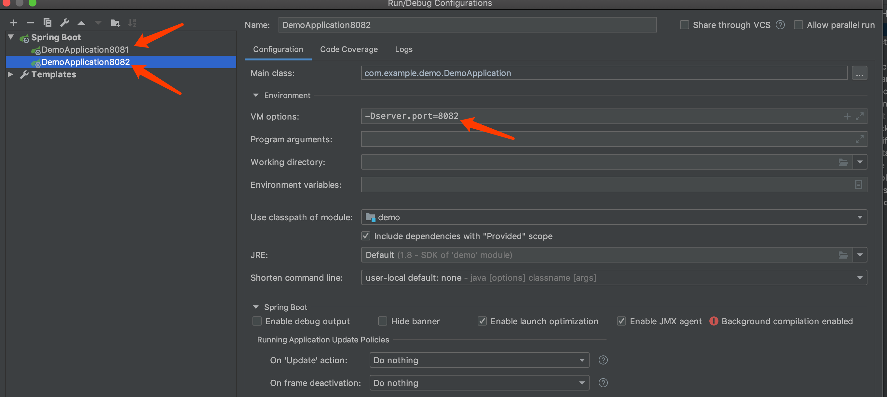

原文出处:本文由博客园博主niocoder提供。
原文连接:https://www.cnblogs.com/merryyou/p/11549294.html
原文连接:https://www.cnblogs.com/merryyou/p/11549294.html
多情只有春庭月，犹为离人照落花。
{kind=link}
概述
因项目中使用到定时任务，且服务部署多实例，因此需要解决定时任务重复执行的问题。即在同一时间点，每一个定时任务只在一个节点上执行。常见的开源方案，如 elastic-job 、 xxl-job 、quartz 、 saturn、 opencron 、 antares 等。最终决定使用elastic-job。elastic-job的亮点主要如下：
- 基于quartz 定时任务框架为基础的，因此具备quartz的大部分功能
- 使用zookeeper做协调，调度中心，更加轻量级
- 支持任务的分片
- 支持弹性扩容 ， 可以水平扩展 ， 当任务再次运行时，会检查当前的服务器数量，重新分片，分片结束之后才会继续执行任务
- 失效转移，容错处理，当一台调度服务器宕机或者跟zookeeper断开连接之后，会立即停止作业，然后再去寻找其他空闲的调度服务器，来运行剩余的任务
- 提供运维界面，可以管理作业和注册中心
但在实际开发中发现elastic-job对于动态添加的定时任务不支持分片。即在多实例情况下，在某个实例上动态添加任务，则该任务会一直在这一台节点上运行。如果需要在其它实例上运行，则需要以相同的参数调用其它实例接口。参考:elastic-job：动态进行任务的添加。在多次百度+google下发现Elastic-Job动态添加任务这里与楼主遇到了相同的问题。但经楼主测试动态添加任务的分片时好时坏,且只要在zookeeper中注册了任务,重启时任务还是会自动初始化。（关于对动态呢任务的描述，可以参考上面链接的描述，此处不在做过多的解释）。
解决
顺着尹大的思路,将任务的节点都集中管理起来，无论动态任务在哪个节点上进行注册，都需要将这个请求转发到其他的节点上进行初始化操作，这样就可以保证多节点分片的任务正常执行。
代码如下:
/**
* 开启任务监听,当有任务添加时，监听zk中的数据增加，自动在其他节点也初始化该任务
*/
public void monitorJobRegister() {
CuratorFramework client = zookeeperRegistryCenter.getClient();
@SuppressWarnings("resource")
PathChildrenCache childrenCache = new PathChildrenCache(client, "/", true);
PathChildrenCacheListener childrenCacheListener = new PathChildrenCacheListener() {
public void childEvent(CuratorFramework client, PathChildrenCacheEvent event) throws Exception {
ChildData data = event.getData();
switch (event.getType()) {
case CHILD_ADDED:
String config = new String(client.getData().forPath(data.getPath() + "/config"));
Job job = JsonUtils.toBean(Job.class, config);
Object bean = null;
// 获取bean失败则添加任务
try {
bean = ctx.getBean("SpringJobScheduler" + job.getJobName());
} catch (BeansException e) {
logger.error("ERROR NO BEAN,CREATE BEAN SpringJobScheduler" + job.getJobName());
}
if (Objects.isNull(bean)) {
addJob(job);
}
break;
default:
break;
}
}
};
childrenCache.getListenable().addListener(childrenCacheListener);
try {
// https://blog.csdn.net/u010402202/article/details/79581575
childrenCache.start(PathChildrenCache.StartMode.BUILD_INITIAL_CACHE);
} catch (Exception e) {
e.printStackTrace();
}
}测试
测试动态添加定时任务,支持分片失效转移。
- 下载elastic-job-spring-boot-starter 使用
maven命令install到本地 - 创建
demo-elastic-job项目
目录结构如下：
demo-elastic-job
├── mvnw
├── mvnw.cmd
├── src
│ ├── main
│ │ ├── java
│ │ │ └── com
│ │ │ └── example
│ │ │ └── demo
│ │ │ ├── job
│ │ │ │ ├── DynamicJob.java
│ │ │ │ └── TestJob.java
│ │ │ └── DemoApplication.java
│ │ └── resources
│ │ ├── application.yml
│ │ └── application-dev.yml
│ └── test
│ └── java
│ └── com
│ └── example
│ └── demo
│ └── DemoApplicationTests.java
├── pom.xml
└── demo.iml
pom.xml
<?xml version="1.0" encoding="UTF-8"?>
<project xmlns="http://maven.apache.org/POM/4.0.0" xmlns:xsi="http://www.w3.org/2001/XMLSchema-instance"
xsi:schemaLocation="http://maven.apache.org/POM/4.0.0 http://maven.apache.org/xsd/maven-4.0.0.xsd">
<modelVersion>4.0.0</modelVersion>
<parent>
<groupId>org.springframework.boot</groupId>
<artifactId>spring-boot-starter-parent</artifactId>
<version>2.1.1.RELEASE</version>
<relativePath/> <!-- lookup parent from repository -->
</parent>
<groupId>com.example</groupId>
<artifactId>demo</artifactId>
<version>0.0.1-SNAPSHOT</version>
<name>demo</name>
<description>Demo project for Spring Boot</description>
<properties>
<java.version>1.8</java.version>
</properties>
<dependencies>
<dependency>
<groupId>org.springframework.boot</groupId>
<artifactId>spring-boot-starter-web</artifactId>
</dependency>
<dependency>
<groupId>org.apache.curator</groupId>
<artifactId>curator-recipes</artifactId>
<version>2.10.0</version>
</dependency>
<dependency>
<groupId>org.apache.curator</groupId>
<artifactId>curator-framework</artifactId>
<version>2.10.0</version>
</dependency>
<dependency>
<groupId>org.springframework.boot</groupId>
<artifactId>spring-boot-starter-web</artifactId>
</dependency>
<dependency>
<groupId>com.cxytiandi</groupId>
<artifactId>elastic-job-spring-boot-starter</artifactId>
<version>1.0.4</version>
</dependency>
<dependency>
<groupId>org.projectlombok</groupId>
<artifactId>lombok</artifactId>
<optional>true</optional>
</dependency>
<dependency>
<groupId>org.springframework.boot</groupId>
<artifactId>spring-boot-starter-test</artifactId>
<scope>test</scope>
</dependency>
</dependencies>
<build>
<plugins>
<plugin>
<groupId>org.springframework.boot</groupId>
<artifactId>spring-boot-maven-plugin</artifactId>
</plugin>
</plugins>
</build>
</project>
DemoApplication.java
package com.example.demo;
import com.cxytiandi.elasticjob.annotation.EnableElasticJob;
import com.cxytiandi.elasticjob.dynamic.service.JobService;
import org.springframework.beans.factory.annotation.Autowired;
import org.springframework.boot.CommandLineRunner;
import org.springframework.boot.SpringApplication;
import org.springframework.boot.autoconfigure.SpringBootApplication;
import org.springframework.context.annotation.ComponentScan;
@SpringBootApplication
@EnableElasticJob
@ComponentScan(basePackages = {"com.cxytiandi", "com.example.demo"})
public class DemoApplication implements CommandLineRunner {
public static void main(String[] args) {
SpringApplication.run(DemoApplication.class, args);
}
@Autowired
private JobService jobService;
@Override
public void run(String... args) throws Exception {
// 模拟初始化读取数据库 添加任务
// Job job1 = new Job();
// job1.setJobName("job1");
// job1.setCron("0/10 * * * * ? ");
// job1.setJobType("SIMPLE");
// job1.setJobClass("com.example.demo.job.DynamicJob");
// job1.setShardingItemParameters("");
// job1.setShardingTotalCount(2);
// jobService.addJob(job1);
// Job job2 = new Job();
// job2.setJobName("job2");
// job2.setCron("0/10 * * * * ? ");
// job2.setJobType("SIMPLE");
// job2.setJobClass("com.example.demo.job.DynamicJob");
// job2.setShardingItemParameters("0=A,1=B");
// job2.setShardingTotalCount(2);
// jobService.addJob(job2);
}
}
TestJob.java
package com.example.demo.job;
import com.cxytiandi.elasticjob.annotation.ElasticJobConf;
import com.dangdang.ddframe.job.api.ShardingContext;
import com.dangdang.ddframe.job.api.simple.SimpleJob;
import lombok.extern.slf4j.Slf4j;
import org.apache.commons.lang3.StringUtils;
import org.springframework.stereotype.Component;
/**
* Created by zhenglongfei on 2019/7/22
*
* @VERSION 1.0
*/
@Component
@Slf4j
@ElasticJobConf(name = "dayJob", cron = "0/10 * * * * ?", shardingTotalCount = 2,
shardingItemParameters = "0=AAAA,1=BBBB", description = "简单任务", failover = true)
public class TestJob implements SimpleJob {
@Override
public void execute(ShardingContext shardingContext) {
log.info("TestJob任务名：【{}】, 片数：【{}】, param=【{}】", shardingContext.getJobName(), shardingContext.getShardingTotalCount(),
shardingContext.getShardingParameter());
}
}
DynamicJob.java
package com.example.demo.job;
import com.dangdang.ddframe.job.api.ShardingContext;
import com.dangdang.ddframe.job.api.simple.SimpleJob;
import lombok.extern.slf4j.Slf4j;
import org.springframework.stereotype.Component;
/**
* Created by zhenglongfei on 2019/7/24
*
* @VERSION 1.0
*/
@Component
@Slf4j
public class DynamicJob implements SimpleJob {
@Override
public void execute(ShardingContext shardingContext) {
switch (shardingContext.getShardingItem()) {
case 0:
log.info("【0】 is running");
break;
case 1:
log.info("【1】 is running");
break;
}
}
}
application.yml
elastic:
job:
zk:
serverLists: 172.25.66.137:2181
namespace: demo_test
server:
port: 8082
spring:
redis:
host: 127.0.0.1
port: 6379测试结果
启动两个项目分别为8081和8082端口，使用REST API来动态的注册任务。
- job

{kind=link}
http://localhost:8081/job post
参数如下：
{
"jobName": "DynamicJob01",
"cron": "0/3 * * * * ?",
"jobType": "SIMPLE",
"jobClass": "com.example.demo.job.DynamicJob",
"jobParameter": "test",
"shardingTotalCount": 2,
"shardingItemParameters": "0=AAAA,1=BBBB"
}{kind=link}
代码下载
- github:demo-elastic-job
- github:elastic-job-spring-boot-starter

🙂🙂🙂关注微信公众号java干货
不定期分享干货资料
参考链接：